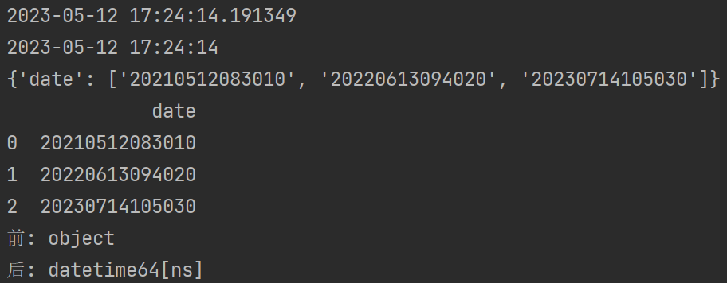
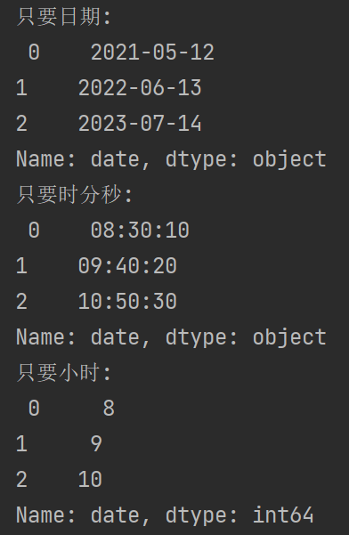

一、pandas提供了to_datetime函数，可以把时间数据（年月日时分秒）转换成时间格式。
具体转换格式参考转换字符串时间为标准时间。
import datetime
import pandas as pd
from pandas import DataFrame
# 获取当前时间
now = datetime.datetime.now()
print(now)
print(now.strftime("%Y-%m-%d %H:%M:%S"))
# 把字符串转换成标准时间
arr = {'date': ['20210512083010', '20220613094020', '20230714105030']}
print(arr)
arr = DataFrame(arr, columns=['date'])
print(arr)
print("前:", arr['date'].dtypes)
arr['date'] = pd.to_datetime(arr['date'])
print("后:", arr['date'].dtypes)

但是to_datetime默认会有（年/月/日/时/分/秒）六个属性，有时这些是没用的，比如我只想要得到一天中的时刻信息，并不想要年月日。这时就要用到一个函数：dt.XXXX (XXXX= date、time、hour、year、month、day)
二、只取日期中的某些信息：dt.XXXX (XXXX= date、time、hour、year、month、day)
# 只想要得到日期中的某些信息
# dt.XXXX (XXXX= date、time、hour、year、month、day)
print("只要日期:\n", arr['date'].dt.date)
print("只要时分秒:\n", arr['date'].dt.time)
print("只要小时:\n", arr['date'].dt.hour)
print("只要分钟:\n", arr['date'].dt.minute)
print("只要秒:\n", arr['date'].dt.second)
print("只要年:\n", arr['date'].dt.year)
print("只要月:\n", arr['date'].dt.month)
print("只要日: \n", arr['date'].dt.day)
